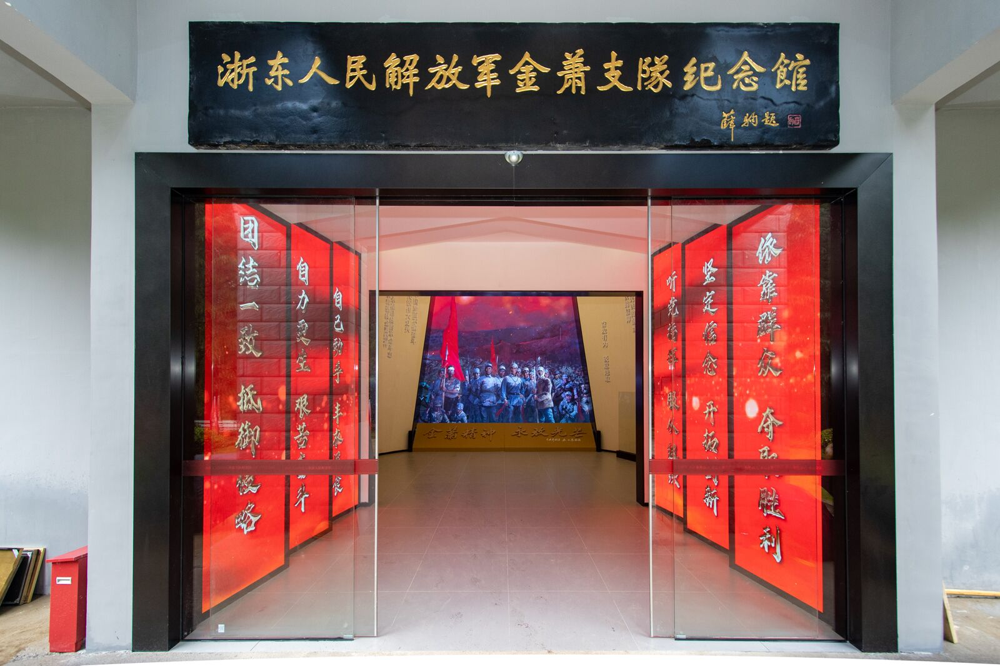
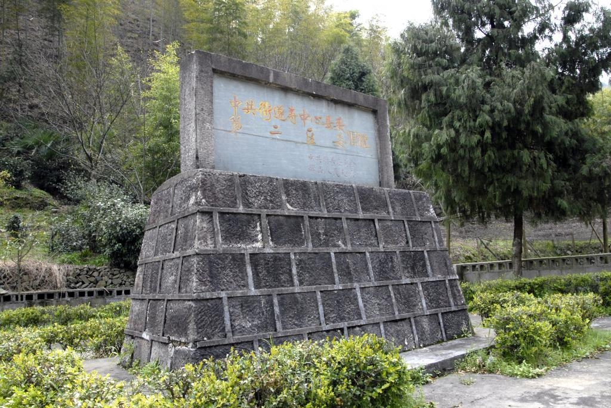
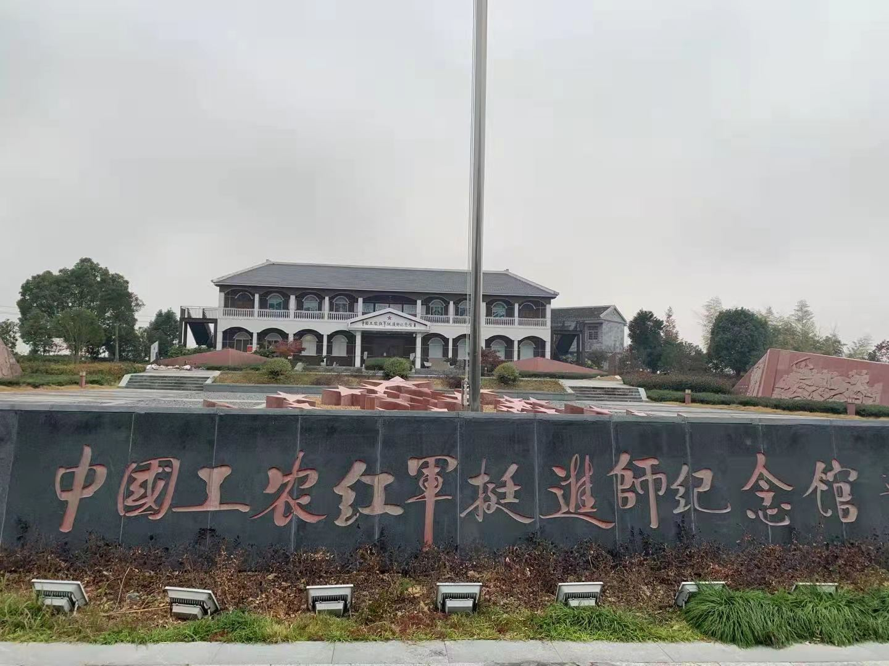

红色精神传承线
路线概述
红色精神传承线是一条聚焦中国共产党革命精神和红色文化传承的研学路线，通过实地考察杭州、衢州和丽水三个具有深厚红色文化底蕴的地区，深入了解浙江省在革命战争年代的奋斗历程和红色精神的传承发展。
本路线将带领学员体验革命先辈的奋斗历程，感受红色精神的伟大力量，培养爱国主义情怀和历史责任感，在沉浸式体验中传承红色基因。
行程天数
3天2夜
途经地区
杭州 → 衢州 → 丽水
适合人群
中学生、大学生、青年团体
主题特色
红色精神、文化传承、沉浸体验
浙东人民解放军金萧支队纪念馆位于杭州市桐庐县新合乡，是为纪念解放战争时期活跃在浙东地区的金萧支队而建立的专题纪念馆。金萧支队是解放战争时期浙东游击纵队的重要组成部分，为浙东地区的解放事业作出了重要贡献。
纪念馆通过丰富的历史文物、图片和文献资料，全面展示了金萧支队的组建、发展和战斗历程，生动再现了革命先辈在艰苦环境中的英勇斗争。学员们将通过参观学习，了解金萧支队的革命事迹和革命精神，感受革命先辈的坚定信念和牺牲精神。

互动体验
"金萧足迹"徒步体验
开展"金萧足迹"徒步体验，沿着金萧支队当年的行军路线，感受革命先辈在艰苦环境中的奋斗精神。
"金萧故事"情景剧表演
参与"金萧故事"情景剧表演，扮演金萧支队战士角色，在角色扮演中加深对革命历史的理解和感悟。
衢州上坪田村位于衢州市衢江区，是浙江省著名的红军村。这里是红军挺进师在浙西南活动的重要根据地，保存了大量红军时期的革命遗址和红色文化资源。
上坪田村曾是红军挺进师的重要活动区域，留下了许多革命故事和英雄事迹。村内保存有红军司令部旧址、红军医院旧址、红军标语墙等革命遗址，是了解红军在浙江活动历史的重要场所。学员们将通过实地考察，了解红军在浙江的革命活动，感受革命先辈的奋斗精神。

互动体验
"红军饭"体验活动
参与"红军饭"体验活动，品尝红军时期的简朴食物，感受革命先辈在艰苦条件下的生活状态。
"红色标语"复原创作
开展"红色标语"复原创作，模仿红军时期的宣传标语，在创作中体会革命宣传的力量和意义。
中国工农红军挺进师纪念馆位于丽水市遂昌县，是为纪念红军挺进师在浙西南的革命活动而建立的专题纪念馆。红军挺进师是红军长征后留在南方坚持游击战争的重要力量，为浙西南革命根据地的创建和发展作出了重要贡献。
纪念馆通过丰富的历史文物、图片和文献资料，全面展示了红军挺进师在浙西南的革命活动，生动再现了革命先辈在艰苦环境中的英勇斗争。学员们将通过参观学习，了解红军挺进师的革命事迹和革命精神，感受革命先辈的坚定信念和牺牲精神。

互动体验
"挺进师路线"沙盘推演
参与"挺进师路线"沙盘推演，在沙盘上模拟红军挺进师的行军路线，了解革命先辈的战略决策。
"挺进师故事"分享会
开展"挺进师故事"分享会，分享红军挺进师的革命事迹，在交流中深化对红色精神的理解和传承。